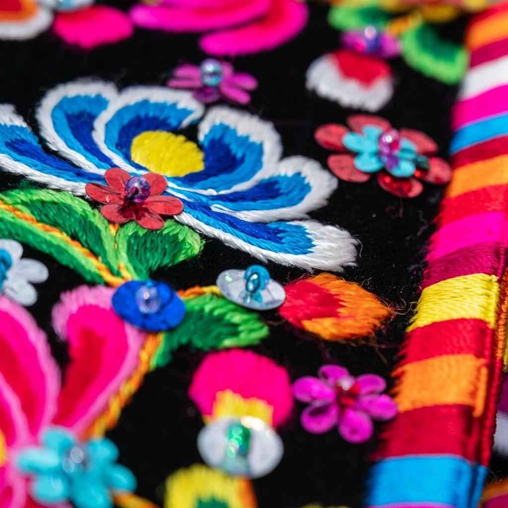
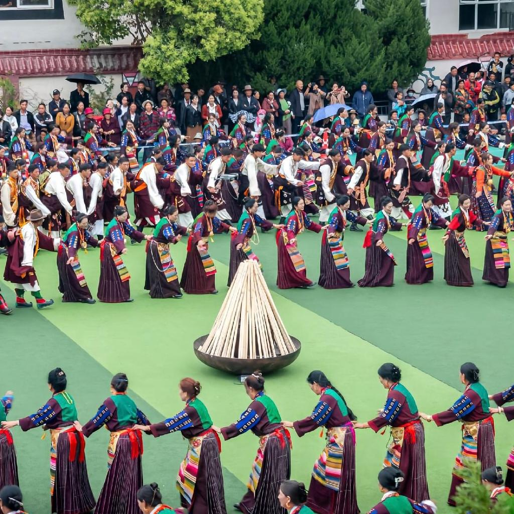

甘孜藏族自治州，位于四川省西部，康藏高原东南。这里拥有丰富多样的人文景观和深厚的文化底蕴。藏传佛教文化在此源远流长，承载着信仰的力量和历史的记忆。
甘孜的民俗风情同样独具特色，藏族的传统服饰色彩鲜艳、工艺精美，各类节庆活动如藏历新年、康定跑马山转山会等热闹非凡，充满了浓郁的民族气息，展现着甘孜人民的豪迈与热情。
神圣寺庙，藏传文化魂。

多彩藏服，展康巴风情。

围舞蹁跹，享康巴豪情。
彩缎画卷，绘佛国传奇。
飞夺泸定桥
1935年5月29日，中央红军部队在四川省中西部强渡大渡河成功后，沿大渡河左岸北上，主力由安顺场沿大渡河右岸北上。红4团官兵在天下大雨的情况下，在崎岖陡峭的山路上跑步前进，一昼夜奔袭竟达240里，终于在5月29日凌晨6时许按时到达泸定桥西岸。第2连连长廖大珠等22人组织的突击梯队踏索夺桥，第3连跟着后面边冲边铺木板，随后红军后续部队紧跟而来，歼灭守敌，占领了泸定城。
飞夺泸定桥粉碎了国民党歼灭红军于大渡河以南的企图，打破了蒋介石妄图把红军变成第二个石达开的反革命迷梦，成为中国共产党长征时期的重要里程碑，为实现具有重大历史意义的红一、二、四方面军会合，最后北上陕北结束长征奠定了坚实的基础。